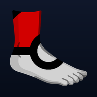

Vous êtes hors ligne
Pokefeet n’a pas pu charger cette page. Vérifiez votre connexion, puis réessayez.
You are offline. Check your connection and try again.
Réessayer / Retry
Pokefeet n’a pas pu charger cette page. Vérifiez votre connexion, puis réessayez.
You are offline. Check your connection and try again.
Réessayer / Retry